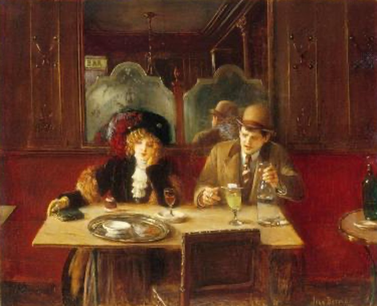
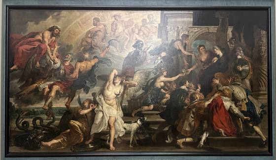

FIVE GUYS
지도샹젤리제 거리에 있는 미국 햄버거 체인.

2주 단위로 발행되는 매거진입니다.
많이 가는 장소별로 나눴습니다. 주관적인 의견이 포함되었으니 참고용으로 봐주세요. 식당 위치와 함께 휴무일도 꼭 확인하세요. 대체로 고급 식당보다 무난한 가격대의 식당으로 선정했습니다.
샹젤리제 거리와 붙어 있어 관광객이 가장 많이 몰리는 곳 중 하나라 맛집 찾기가 쉽지 않습니다. 프랜차이즈 식당 위주로 이용하길 권합니다.
샹젤리제 거리에 있는 미국 햄버거 체인.
스테이크 체인. 단일 메뉴로, 스테이크가 두 번에 나눠 나옵니다.
개선문에서 가장 가까운 한식당.
샹젤리제 거리 중간쯤에 있는 한식당.
가정식당. 스테이크를 포함한 기본 메뉴 몇 가지와 오늘의 요리로 구성.
일식당(초밥, 사시미, 돈가스 등). 탐포포 세트 메뉴 추천.
베이글 샌드위치 전문점. 매장이 작아 포장 추천.
인테리어가 깔끔한 인도 식당. 커리처럼 친근한 메뉴를 즐길 수 있습니다.
세련된 이탈리안 식당.
샌드위치, 파스타 등 간단한 프랑스식 점심 식당. 포장 가능, 오후 2시 30분까지만 엽니다.
포카치아로 만든 이탈리아식 샌드위치 가게. 저녁에는 술과 안주를 파는 작은 술집.
쇼핑 상가가 많아 관광객이 즐겨 찾는 동시에 시민들이 많이 사는 동네라, 가정식당과 다양한 길거리 음식을 함께 찾을 수 있습니다.
가정식당. 추천: 오리가슴살(Magret de canard), 양고기(Filet d’agneau), 참치 요리(Mille-feuille de thon).
가정식당. 추천: 스테이크(Entrecôte bistrot 300g).
스테이크 전문점. 추천: 스테이크(Entrecôte de bœuf), 전식으로 달팽이(Escargots)와 푸아그라(Foie gras).
마레 지구에서 가장 붐비는 중동 음식점. 채식 위주의 팔라펠 말고도 케밥 같은 고기 요리가 있습니다.
중국식 훠궈집. 25유로 안팎으로 육수를 고르고 재료는 무한 리필.
레스토랑, 칵테일 바, 카페를 함께 운영. 해적선 콘셉트의 칵테일 바 추천, 새벽 1시까지.
도수가 낮은 사과 와인(시드르) 바. 노르망디 전통 술이지만 세계 각지의 시드르도 맛볼 수 있습니다.
루브르 박물관 근처에도 있는 인기 주먹밥집. 날씨 좋은 날 포장해서 생마르탱 운하에서 피크닉 추천.
오르세 미술관 입구 쪽에는 마땅한 식당이 없어서 도보 5–10분 거리의 식당으로 정리했습니다.
센강 남쪽에서 가장 오래된 동네 중 하나로, 생제르맹데프레 성당 주변에 카페, 식료품점, 상점이 모여 있습니다. 헤밍웨이와 사르트르 같은 20세기 초 지식인들이 즐겨 찾던 곳입니다.
시골 식당 분위기, 본식 10–15유로. 추천: 오리 다리 콩피(Confit de canard), 육회(Tartare de bœuf).
가정식당. 오리고기, 달팽이 같은 기본 프랑스 요리를 무난한 가격에.
스테이크 전문점(단일 메뉴). 샹젤리제 거리 근처에도 분점이 있습니다.
샌드위치 가게. 10유로 안팎의 세트 메뉴, 화덕에 구워 바삭한 빵. 딱딱한 바게트가 힘든 분께 추천.
헤밍웨이, 사르트르 등이 찾던 파리에서 가장 유명한 카페. 핫초코, 샌드위치 등 간단한 식사 가능.
Les Deux Magots와 함께 꼽히는 파리에서 가장 유명한 카페.
회사원이 많아 식사 시간이 시작될 때 맞춰 가지 않으면 오래 기다릴 수 있습니다. 오래전부터 일본인이 자리 잡은 지역이라 일식과 한식이 특히 인기입니다.
파리의 인기 우동집. 세트 메뉴 15–25유로, 사이드와 함께 먹는 세트 추천.
수산시장 콘셉트의 인기 해물 라멘집. 대기가 길어 오픈 시간에 가거나, 브레이크 타임이 없으니 15–18시경을 추천.
분식집 느낌의 라멘 전문점. 매운 라멘 추천.
레스토랑 분위기의 라멘 전문점. 닭 육수의 파이탄(Paitan) 라멘 추천.
일본식 주먹밥집. 개당 3유로 안팎으로 가성비가 좋고, 매장 안 취식은 안 됩니다. 피크닉용 추천.
한식당.
한식당.
루브르 박물관에서 가장 가까운 베트남 쌀국수집. 한 그릇 10–15유로.
오페라 가르니에 근처 백화점(라파예트, 프랭탕)에 가는 분들을 위한 목록과, 오페라와 마레 지구 사이 번화가의 식당입니다.
생라자르역 근처의 레바논 음식 맛집. 저녁은 예약이 필요할 수 있습니다.
와인, 위스키 등을 맛보고 살 수도 있는 술집.
오페라 가르니에를 지은 건축가가 설계한 화려한 식당. 해산물부터 육류, 달팽이까지 기본 프랑스 요리. 본식 40유로 전후.
인테리어가 화려한 식당. 메뉴가 다양하고 가격이 무난해 프랑스식을 가볍게 체험하기 좋습니다. 뤼미에르 형제가 처음으로 영화를 상영한 곳이기도 합니다.
스테이크 전문점. 분위기 좋은 파사주 데 파노라마 안.
오리고기 전문점. 파사주 데 파노라마 안.
디저트 카페. 파사주 데 파노라마 맞은편 파사주 주프루아 안.
핑크색 콘셉트의 인기 이탈리안 식당. 파스타와 피자, 기본 빵으로 피자 도우가 나옵니다. 예약 필수.
파리에서 손꼽히는 훠궈집. 예약 가능한지 먼저 연락해 보길 추천.
파리에서 가장 붐비는 곳. 최근 대형 쇼핑센터와 백화점이 문을 열어 식당 말고도 볼거리가 많아졌습니다.
중국식 매운 국수집. 맵기 조절 가능.
18세기부터 이어진 파리에서 가장 오래된 디저트 가게. 럼을 곁들인 바바 오 럼의 원조.
달팽이 요리 전문 식당.
퐁피두 센터 옆 수제버거집. 푸짐한 식사를 원하면 추천.
퐁피두 센터 근처, 베트남인이 운영하는 쌀국수집.
랍스터 샌드위치가 메인인 가게. 가격대는 높은 편이고 레모네이드가 아주 맛있습니다.
퐁피두 센터 근처의 레바논식 아이스크림집. 피스타치오와 오렌지꽃 향을 입힌 아이스크림.
라멘집. 점심 시간이 길어 15시까지도 점심을 먹을 수 있습니다.
퐁뇌프 다리와 사마리텐 백화점 근처의 쌀국수집.
전망 좋은 몽파르나스 타워로 유명한 곳. 피카소 같은 20세기 예술가들이 모이던 동네로, 타워 주변에 식당가가 있습니다.
에펠탑 서쪽은 한국인이 많이 사는 15구라 한식당이 많고, 동쪽은 유네스코 본부와 국회의사당 등 관공서가 모인 7구입니다.
본식 40유로대의 고기·해산물 요리 전문점(스튜, 스테이크, 생선 등). 식당이 작아 예약을 꼭 추천.
한국인이 많이 찾는 프랑스 가정식당. 달팽이부터 오리 콩피까지, 20–30유로대.
쌀국수집. 15유로 전후.
에펠탑이 보이는 테라스에서 술과 안주, 스테이크 같은 간단한 식사.
수제 맥주집.
분식집 느낌의 한식당. 6호선 Dupleix역 근처.
감자탕 전문점, 비빔밥 등 다른 메뉴도 있습니다. 10호선 Charles Michels역 근처.
그릴이 있는 한식당, 메뉴가 다양합니다. 6·8호선 La Motte-Picquet–Grenelle역, 6호선 Cambronne역 근처.
파리·일드프랑스 지역 대학생들의 연합 총회(Interfac)가 11월 26일(목) 파리에서 학생 시위를 열자고 제안했습니다. 대입 지원 시스템 개편, 학교·대학 예산 확대 등을 요구하는 시위로, 이달 들어 여러 차례 이어진 교육 분야 시위의 연장선입니다.
다만 주요 학생 단체가 함께 부른 전국 단위 시위는 아니어서 규모는 아직 알 수 없습니다. 11월 24일 현재 시간과 행진 경로는 발표되지 않았고, 메트로역 폐쇄 발표도 없습니다. 이전 시위 때는 경찰청 요청으로 행진 구간 주변 메트로역이 일시적으로 닫힌 적이 있습니다.
이번 주(11/24~11/29) 대중교통(RATP·SNCF) 파업 예고는 없습니다.
샹젤리제 거리, 루브르 박물관, 시테섬 등 여행객이 많이 찾는 관광지 주변은 비교적 평온한 편입니다. 경로가 정해지면 원문 기사에서 확인할 수 있습니다.
생활비 상승에 항의하는 ‘노란 조끼’ 시위가 이번 토요일 6번째로 열립니다. 노란 조끼 운동 8주년 주간에 맞춰, 유럽 여러 나라 단체가 함께 부른 공동 행동의 하나로 진행됩니다.
11월 17일 현재 파리에서의 장소와 시간은 발표되지 않았고, 경찰청이 승인한 행진 경로도 없습니다. 최근 토요일 시위들은 주로 관광지에서 떨어진 파리 동쪽 지역에서 열렸습니다.
샹젤리제 거리, 루브르 박물관, 시테섬 등 여행객이 많이 찾는 관광지 주변은 비교적 평온한 편입니다. 행진 경로가 정해지면 원문 기사에서 확인할 수 있습니다.
보졸레 누보는 리옹 북쪽 보졸레 지방에서 그해 가을 수확한 가메(Gamay) 품종 포도로 만드는 햇와인입니다. 몇 주 만에 짧게 숙성해 내놓기 때문에 떫은맛이 적고, 바나나나 딸기 같은 과일 향이 나는 것이 특징입니다. 오래 두기보다 나온 직후에 마시는 와인입니다.
출시일은 1985년부터 ‘11월 셋째 목요일’로 정해져 있어, 이날이 되면 프랑스 전역에서 동시에 판매가 시작됩니다. 올해는 11월 19일 목요일입니다. 프랑스뿐 아니라 일본, 미국, 독일 등에서도 출시를 기념하는 행사가 열립니다.
파리에서도 와인바와 식당들이 저마다 출시 기념 메뉴와 행사를 준비하고 있습니다. 레알 근처의 오래된 식당 Le Pied de Cochon은 18일 자정 직전부터 24시간 동안 기념 행사를 엽니다.
파리 연말 시즌의 시작을 알리는 샹젤리제 거리 조명이 이번 일요일 저녁에 켜집니다. 점등식에는 빛과 소리 공연, 프랑스 록밴드 Feu! Chatterton의 공연이 예정돼 있고, 배우 케이트 블란쳇이 점등을 맡습니다.
같은 날 샹젤리제 거리 크리스마스 마켓도 약 10년 만에 다시 문을 엽니다. 근처 Rue du Faubourg Saint-Honoré의 조명은 11월 15일부터 이미 켜져 있어 함께 둘러보기 좋습니다.
나무 오두막에서 뱅쇼와 간식, 선물을 파는 파리의 크리스마스 마켓이 차례로 문을 엽니다. 이번 호 기간(11/16–29)에 갈 수 있는 곳을 개장일 순서로 정리했습니다.

14